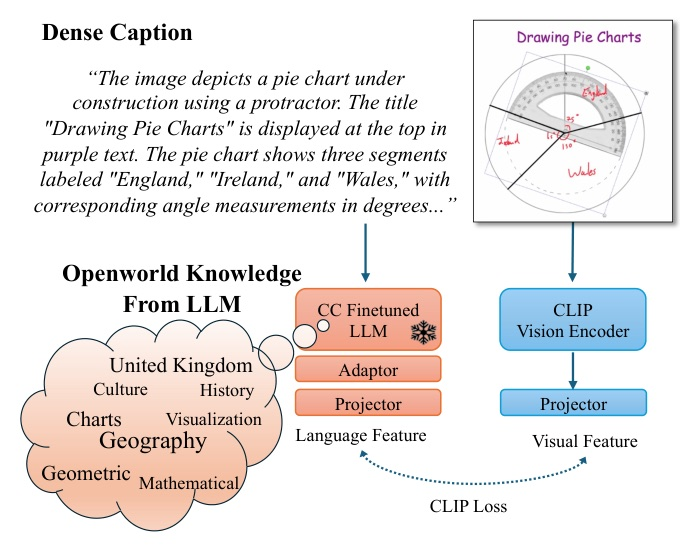
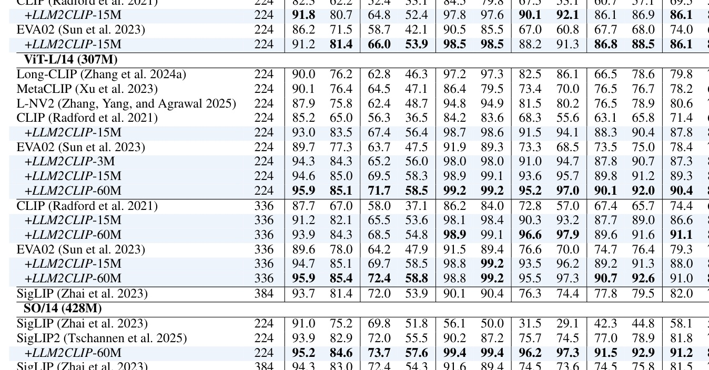

不是「把 LLM 塞進 CLIP」就會變強。
LLM2CLIP 先把 LLM 變成 caption-contrastive embedding model，再凍結 LLM、用小 adaptor 接到 CLIP vision encoder，讓 dense caption 的語義進到 shared space。

| component | default | reason |
|---|---|---|
| LLM | LLaMA 3.1 8B | 作為新 text encoder 的語義來源 |
| attention | bidirectional | caption understanding > generation |
| sentence token | average pooling | 比 EOS token 更穩 |
| loss | supervised SimCSE | Stage-1 最關鍵 ingredient |
| data | 30M DreamLIP captions | 同圖多 caption 形成 positive pairs |
| axis | datasets / protocol | what it tests |
|---|---|---|
| English retrieval | Flickr1K, COCO5K, SG4V, Urban1K, DOCCI | 短 caption + 長 dense caption matching |
| multilingual | Flickr-CN, COCO-CN, XM3600 | 跨語言 image-text space |
| classification | ImageNet 0-shot / linear probe | prompt alignment vs visual feature quality |
| seg/det | COCO-S, ADE, VOC, City, OV-COCO | text-driven segmentation + pure visual encoder |
| MLLM | LLaVA-1.5 benchmarks | CLIP as visual tokenizer/encoder |
| base model | baseline avg I2T | baseline avg T2I | +LLM2CLIP avg I2T | +LLM2CLIP avg T2I | delta |
|---|---|---|---|---|---|
| EVA02 ViT-L/14 224 | 78.4 | 71.5 | 90.4 | 86.3 | +12.0 / +14.8 |
| SigLIP2 So/14 224 | 81.8 | 75.8 | 91.2 | 86.4 | +9.4 / +10.6 |
| SigLIP2 short-caption | - | - | - | - | +1.0 / +1.9 reported |
| SigLIP2 long-caption | - | - | - | - | +14.8 / +15.8 reported |

| model | Flickr-CN I2T/T2I | COCO-CN I2T/T2I | XM3600 I2T/T2I |
|---|---|---|---|
| EVA-L-224 | 4.4 / 0.9 | 2.6 / 1.0 | 14.0 / 8.0 |
| +LLM2CLIP | 90.6 / 75.6 | 72.0 / 70.1 | 68.3 / 56.0 |
| SigLIP2 | 79.2 / 56.9 | 55.3 / 51.7 | 59.7 / 48.2 |
| +LLM2CLIP | 90.0 / 76.1 | 70.8 / 70.2 | 69.1 / 56.3 |
| metric | EVA02 | +LLM2CLIP | delta |
|---|---|---|---|
| COCO-S mIoU | 12.9 | 15.3 | +2.4 |
| ADE mIoU | 11.5 | 15.8 | +4.3 |
| VOC mIoU | 21.0 | 29.1 | +8.1 |
| City mIoU | 13.5 | 20.1 | +6.6 |
| COCO APbb/APseg | 45.0 / 38.2 | 45.6 / 38.7 | +0.6 / +0.5 |
真正 work 的地方：先讓 LLM caption space 變可分。
Raw LLM 大但不等於好 embedding；caption-contrastive fine-tuning 才是把 LLM knowledge 變成 CLIP 可用 supervision 的轉接器。
| Stage-1 variant | Avg I2T | Avg T2I | reading |
|---|---|---|---|
| LoRA + AvgPool + BiAttn + supervised SimCSE | 80.4 | 77.9 | default |
| same + unsupervised SimCSE | 59.2 | 57.7 | huge drop |
| same + MNTP only | 70.1 | 67.0 | not enough |
| MNTP + supervised SimCSE | 79.7 | 77.2 | no real gain over default |
| frozen + linear adaptor | 74.1 | 71.3 | LoRA matters |
| text encoder | Avg I2T | Avg T2I |
|---|---|---|
| CLIP baseline | 74.4 | 72.0 |
| LLM2Vec-Llama-3-8B | 81.4 | 80.2 |
| NV-Embed-v2 | 81.4 | 79.9 |
| VLM2Vec | 78.2 | 77.1 |
| Llama-3.1-8B raw | 66.5 | 62.5 |
| Llama-3.1-8B-CC | 84.8 | 81.0 |
| Stage1 adaptor | Stage2 adaptor | Avg I2T | Avg T2I |
|---|---|---|---|
| - | - | 78.3 | 75.5 |
| - | Linear x1 | 79.2 | 76.7 |
| - | Linear x2 | 80.1 | 76.8 |
| - | Linear x4 | 80.4 | 77.9 |
| Linear x4 | Linear x4 | 80.5 | 77.7 |
| Transformer x1 | Transformer x1 | 80.5 | 77.3 |
Bringing LLMs into the CLIP framework, however, raises two key challenges: 1. Feature separability... 2. Training cost...
把 LLM 放進 CLIP 的真正阻礙是 caption feature separability 與訓練成本，不是單純模型大小。Introduction p.2 lines 132-142
We perform caption-contrastive(CC) fine-tuning on the LLM... average pooling... bidirectional attention... supervised SimCSE contrastive loss.
Stage 1 的本質是把 LLM 重新塑造成 caption embedding 模型。Introduction p.2 lines 149-154
freeze all LLM gradients, treat its sentence embeddings as fixed features, and append a small learnable adaptor trained with the CLIP visual encoder.
Stage 2 把 LLM 變成離線特徵供應器，避免把 LLM 訓練成本帶進 CLIP。Introduction p.2 lines 160-164
This minimal design yields an LLM-enhanced cross-modal space while keeping compute cost nearly identical to standard CLIP fine-tuning.
這篇的工程價值在「接近標準 CLIP finetuning 成本」下換到 LLM 級文字理解。Introduction p.2 lines 169-171
We observe that after applying LLM2CLIP, zero-shot performance on ImageNet shows a modest drop. However, the accuracy from linear probing improves...
成功不是無代價；視覺表徵可變強，但 shared-space prompt alignment 可能變差。§4.2 p.6 lines 1143-1153
Comparing experiments (a)-(b) and (b)-(c) shows that neither optimising two separate losses nor explicitly aligning the two text encoders brings any meaningful benefit.
雙 text encoder 對齊不是 magic；最簡單的 replacement 反而是主線。§4.4 p.7 lines 1416-1423
今天的 takeaway：LLM2CLIP 的重點不是 LLM 變大，而是先把 caption feature space 做對。